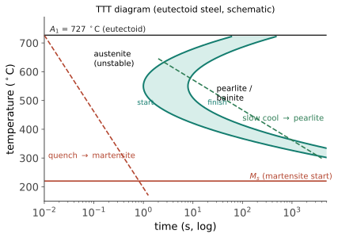

本页目录
热力 III · 相变与热处理：组织的操纵术
同一根共析钢，慢冷常得到较软的珠光体，足够快的冷却则可能得到显著更硬的马氏体——成分没变一个原子，性能仍可天差地别：这就是"工艺→结构→性能"主线最戏剧化的舞台。本页装配两台机器（形核-长大、TTT 图），然后走完钢铁热处理的标准剧目：退火、淬火、回火。
学习层：给共析钢等温保温，先预测转变量再读 TTT 边界
1. 具体工程情境：同一根齿轮钢的等温转变窗口
把奥氏体化后的钢件快速送到某个恒定温度并保持。工艺工程师想回答：保温 \(90\ \mathrm s\) 后有多少相变？何时达到一半？当前转变速率是否已越过峰值？这是一条等温问题；若实际炉子连续降温，就必须换用 CCT 或经过校准的非等温方法。
2. 必须作答的预测门：incubation、半时间和 TTT/CCT
先判断三项：\(t\le t_i\) 时转变分数是否已经增长？\(f=0.5\) 的时间是否由 \(t_i+(\ln2/k)^{1/n}\) 给出？TTT 曲线能否直接当作任意连续冷却的 CCT 曲线？互动实验会在提交后揭示答案。
3. 正式公式桥：JMAK 的转变分数、半时间和瞬时速率
对固定温度、固定参数的等温保持，取
其中 \(k\) 的单位是 \(\mathrm{s^{-n}}\)，\(n\) 无量纲。于是
实验用一个可见的 TTT 风格温度代理：过冷驱动力随温度降低而增强，迁移率随温度升高而增强，两者乘积在中间温度形成“鼻尖”。在鼻尖把 \(k=\ln2/t_{50,\mathrm{nose}}^n\) 归一化，所以零 incubation 时特征半时间确实读作 \(t_{50,\mathrm{nose}}\)。
4. 动手实验：让等温账本与 TTT 风格曲线联动
JavaScript 失效时的静态 fallback：默认取 \(T=600\ ^\circ\mathrm C\)、\(n=2.0\)、\(t_i=10\ \mathrm s\)、当前 \(t=90\ \mathrm s\)、鼻尖特征半时间 \(60\ \mathrm s\)。静态答案应至少保留以下可审计关系：
| 量 | 公式 / 读法 |
|---|---|
| 转变分数 | \(f=0\)（\(t\le t_i\)）；否则 \(1-e^{-k(t-t_i)^n}\) |
| 默认温度速率形状 \(S(600\ ^\circ\mathrm C)\) | \(0.5729\)；教学代理的中间温度速率 |
| 速率常数 | \(k(T)=\ln2\,S(T)/t_{50,\mathrm{nose}}^n\)，单位 s\(^{-n}\) |
| 默认 \(k(600\ ^\circ\mathrm C)\) | \(1.103\times10^{-4}\) |
| 默认 \(f(90\ \mathrm s)\) | \(0.5063\) |
| 默认 \(df/dt\) | \(8.71\times10^{-3}\) |
| 半时间 | \(t_{50}=t_i+(\ln2/k)^{1/n}\) |
| 默认 \(t_{50}\) / \(t_{99}\) | \(89.27\) / \(214.33\) |
| TTT 鼻尖代理 | \(667\) |
| 99% 时间 | \(t_{99}=t_i+[-\ln(0.01)/k]^{1/n}\) |
| 温度图 | 蓝/金/绿曲线分别是 1%/50%/99% 的等温时间；红点是当前保持 |
TTT 鼻尖是中间温度的最快窗口，不是把曲线当成连续冷却路径的时刻表。
5. 形核-长大解释与模型边界
- \(n\) 是一段固定条件下的时间幂律摘要，可能同时吸收形核是否持续、有效长大维数、位点饱和、碰撞/阻塞和速率变化；拟合到同一个 \(n\) 不等于看到了唯一显微机制。
- JMAK 的参数假定等温、均匀或可等效的形核-长大过程；温度连续变化时，\(k(T)\) 和 \(n\) 都可能变化，不能把一个等温拟合无条件外推。
- TTT 是等温转变图；CCT 是连续冷却转变图。把 TTT 直接沿冷却曲线读成 CCT 会漏掉温度历史、同时发生的转变与传热路径。additivity 规则或分步积分只有在经过校准、并满足相应独立性假设时才是近似。
- 马氏体方面，对许多钢常用的无热激活（athermal）近似是：\(M_s\) 以下的转变量主要由欠冷温度决定，在相关时间窗内对等温等待不敏感；这不是所有钢种、所有时间尺度和所有转变条件的普遍定律。
6. 正式映射与工程后果
JMAK 把保温时间映射为组织分数，TTT/CCT 把工艺路径映射为可达组织，最终还要通过珠光体片层、贝氏体/马氏体比例、回火状态和缺陷结构映射到硬度、强韧性与尺寸稳定性。工程决策不是“把 \(n\) 调到某个机制”，而是用独立显微、硬度和热分析证据检验这套等温模型是否适用。
迁移问题：如果连续冷却曲线在鼻尖附近只停留很短时间，你会直接读 TTT 的 50% 线，还是寻找 CCT/做分步热历史计算？若同样的 \(n\) 出现在两种不同组织中，你还需要哪两类独立证据来区分它们？
1. 形核：新相的出生门槛
新相核心：体积上赚自由能（\(\Delta G_v < 0\)）、界面上赔（\(\gamma\)）——半径 \(r\) 的核账本 \(\Delta G = \frac43\pi r^3\Delta G_v + 4\pi r^2\gamma\) 先升后降，临界半径 \(r^* = -2\gamma/\Delta G_v\)：小于它的胚胎会解散、翻过山头才能长大（【推】\(d\Delta G/dr = 0\) 一步）。
两条推论定全局：① 过冷度 \(\Delta T\) 越大 ⇒ \(|\Delta G_v| \propto \Delta T\) 越大 ⇒ 门槛越低、形核越快——过冷是形核的燃料；② 非均匀形核几乎总是主角：在容器壁/夹杂/晶界上借现成界面，门槛打折——纯净过冷水能到 -40 °C 不结冰、云要靠凝结核、铸造要加孕育剂细化晶粒，一条原理三个现场。
2. TTT 图：动力学的时刻表
形核率（要过冷）× 长大率（要扩散、要温度）两个相反的温度依赖相乘 ⇒ 转变速率在中间温度最快——C 曲线：

读法：等温热处理设计 = 在这张图上标出快速到达的保持温度和保持时间；连续冷却设计应查CCT 图或使用经过验证的热历史模型。避开鼻尖所需的冷速只是特定合金、尺寸和起始组织下的临界量；合金元素（Cr、Mo、Ni…）常把转变窗口推向更长时间 ⇒ 临界冷速下降 ⇒ 淬透性提高——合金钢"好淬"的一个关键原因（大件心部冷不快，淬透性决定能淬多厚）。
3. 马氏体：不扩散的政变
冷速快到原子来不及扩散重排时，FCC 奥氏体可经切变形成过饱和体心正方（BCT）马氏体——马氏体转变：在许多钢的工程计算中，常用“低于 \(M_s\) 后分数主要由欠冷温度决定、相关时间影响较小”的无热激活近似；这不是所有钢、所有温度路径和所有时间尺度的普适描述。过饱和碳把晶格撑歪 + 相变自带高密度位错/孪晶 ⇒ 常表现为高硬度和较低韧性（结构 III"障碍物"的极端堆料）。
回火（与马氏体成对使用）：淬火后中温回炉，让碳部分析出成细碳化物——牺牲一点硬度换回韧性。淬火 + 回火 = 钢铁工业的标准组合拳："先把强化元素锁进晶格、再控制释放"——一句话讲完刀具、轴承、弹簧、齿轮的热处理哲学。
热处理剧目表（同一根钢的四种命运）：
| 工艺 | 路径 | 组织 | 性格 |
|---|---|---|---|
| 完全退火 | 炉冷（慢） | 粗珠光体 | 最软，好加工 |
| 正火 | 空冷 | 细珠光体 | 略强，组织均匀 |
| 淬火 | 水/油急冷 | 马氏体 | 最硬最脆 |
| 淬火+回火 | 急冷+中温保温 | 回火马氏体（细碳化物） | 强韧兼得——工程主力 |
（等温剧目：奥氏体等温淬火得贝氏体——强韧介于两者之间【研：贝氏体机理至今仍有学术争论——扩散派 vs 切变派，一个本科页承载不下的百年公案，立牌】。）
4. 相变工具箱的通用性
这台"形核-长大 + 过冷驱动 + 扩散限速"的机器远不止炼钢：铝合金时效析出（下一站性能 I 的析出强化——汽车铝板与航空 7075 的强化引擎）、玻璃陶瓷的受控晶化（结构 IV 的微晶玻璃）、聚合物结晶（性能 III）、云滴与冰雹（大气物理）、蛋白质结晶与病理性聚集——一套语言通吃。JMAK 方程 \(f = 1 - \exp(-kt^n)\) 描述转变分数的 S 曲线；\(n\) 是固定条件下的时间幂律摘要，不能单凭它唯一“读出机制”【研：需要独立显微和动力学证据】——又一条 S 形曲线（🔗 数学站建模页 Logistic 家族的远亲）。
5. 数字感与反直觉
- 共析钢临界冷速 ~10²–10³ °C/s（水淬边缘可达）；高合金工具钢可低至 <1 °C/s（空冷即淬——"风硬钢"）；
- 硬度谱：退火珠光体 ~180 HV → 淬火马氏体 ~800 HV——同成分、四倍多硬度；
- 反直觉：淬火的目的不是"冷"而是不让原子动（负目标：阻止扩散）；马氏体硬不是因为"冷得硬"而是碳被囚禁 + 缺陷爆棚；回火是主动变软——工程上"最优"几乎从不在性能单项的极值点（主线"权衡"的又一现身）。
【研】对标 Porter & Easterling 全书与 Bhadeshia《Steels》；界面控制 vs 扩散控制长大、马氏体晶体学（K–S 关系）、位移型相变的朗道语言（🔗 物理站相变章）是研究生纵深。
线二收官：地图（相图）、时钟（扩散）、操纵术（相变）——"为什么与多快"齐了。线三开始收获：这些组织到底换来了什么力学性能——强度的微观起源与强化四法。